PRONET
Anulaciones
- Solicitar datos en Excel de la operación a sac@pronet.com.py.
- Datos necesarios:
- Detalles visualizados en PE Pagos (no adjuntar número de cuenta débito).
- Nombre del Facturador (asunto o cuerpo de mail).
- Motivo del pedido (en el portal).
- En asunto: datos del cliente o número de ID.

- Respuesta llega el mismo día con los datos de la operación.
- Ingresar al portal: Portal AquiPago.
- Ir a la opción Procesos → PROCESO EXTORNOS.
- Luego de seleccionar la opción de “PROCESO EXTORNOS”, solicitará los datos de la trx que se encuentran en el archivo indicado anteriormente, a excepción del ítem “Comprobante” donde pueden adjuntar el mail remitido a pronet o bien el archivo Excel directamente, no requiere de comprobante manual..
- Obs.: El costo y todos los datos indicados en rojo, se deben omitir por acuerdo bancario, las anulaciones no poseen costo hasta la fecha.:
- Tras cargar todos los datos, generará un mensaje de que el pedido fue ingresado de forma exitosa, NO aparece en el portal el nro de ticket pero llega de forma automática en correo 24hs en internet de la siguiente manera.
- En un plazo aproximado de 1 semana, si la reversión fuera aprobada, se recibirá el correo de aviso de la siguiente manera:
- En el correo podrán identificar la transacción según los datos (terminal, lote, nro. Trx, monto, entidad, referencia).
- Con este correo de aprobación, deben derivar el ID al área de Cámara Compensadora con el formato correspondiente en la fecha que se indica en el correo que será acreditado.
- Si el pedido de reversión fuera rechazado, se recibirá también un correo de aviso de la siguiente manera:
- En este caso, el cliente debe ser informado y el ID se deriva a Cámara Compensadora con el comentario de “Favor finalizar sin éxito. Reversa rechazada, cliente informado” aclarando el motivo descripto por la procesadora.
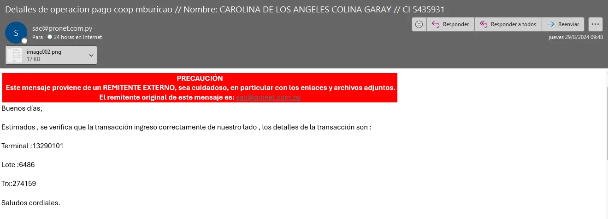
Datos necesarios para avanzar:
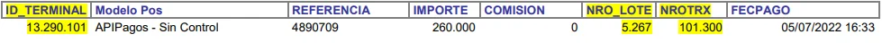
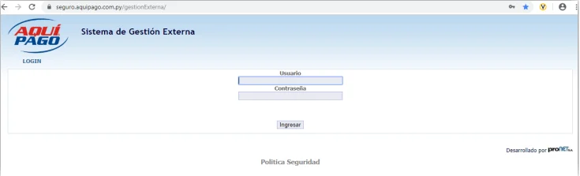
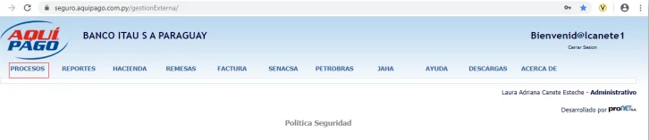
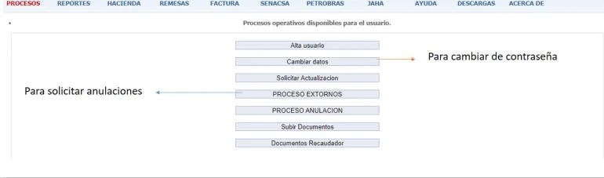
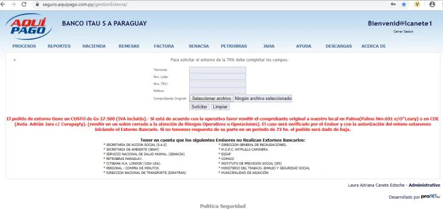
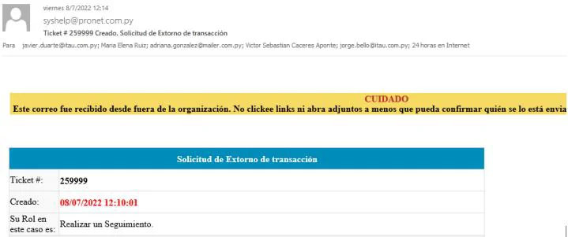
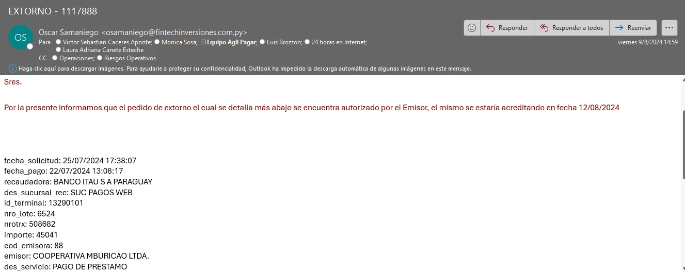
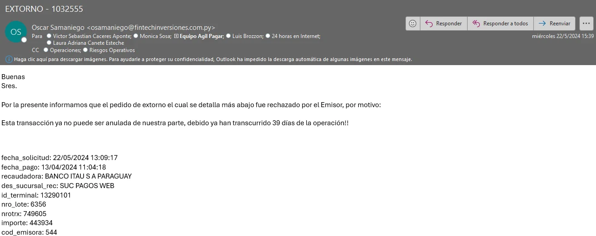
Confirmaciones
- Enviar correo a sac@pronet.com.py con:
- Detalles visualizados en PE Pagos (no adjuntar el número de cuenta débito)
- Nombre del Facturador. (En el asunto o cuerpo de mail)
- Motivo del pedido (en el portal).
- En el asunto se sugiere colocar datos del cliente o bien el número de ID para seguimiento.
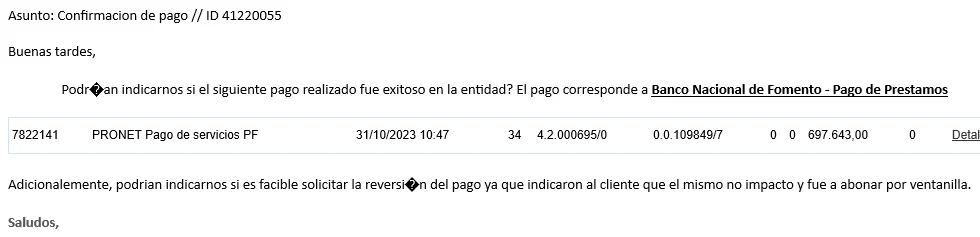
Luego la procesadora nos comparte la respuesta del estado del pago:
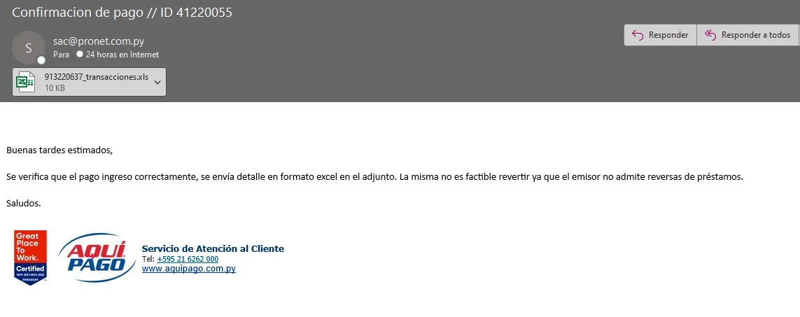
- Si la procesadora nos indicara que el pago no fue exitoso de su lado, se debe realizar la consulta al área interna de Gestión de Conciliación Operacional de modo a validar si hubo pendencia contable.
- GCO confirma NO hubo pendencia contable: solicitar OK a procesadora para reversión vía BPM.
- GCO confirma hubo pendencia contable: GCO deriva extorno a AOC.
NETEL
Anulaciones
- Correo a corporativos@pagoexpress.com.py.
- Datos necesarios:
- Detalles PE Pagos.
- Número de Ticket (24 Hs. Admin).
- Motivo del pedido.
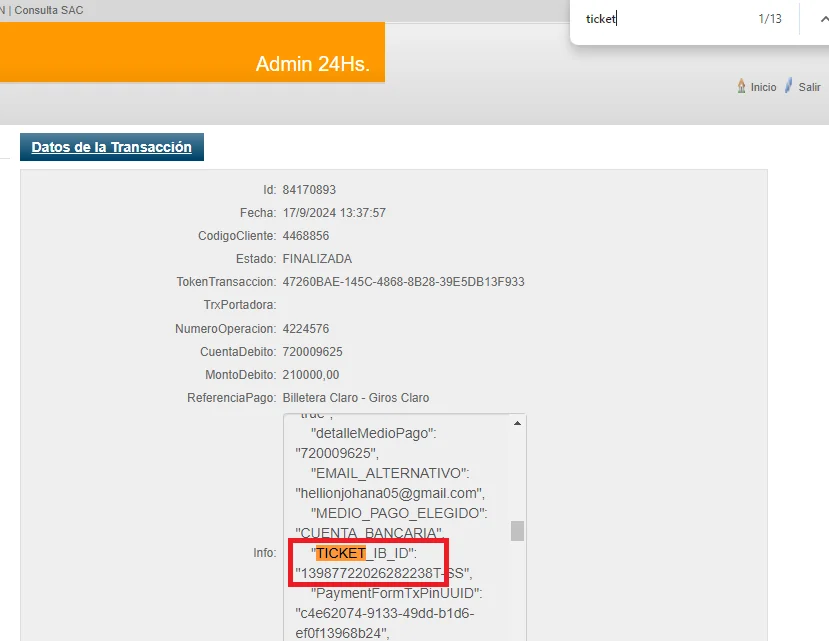
- Si es billetera/giro: asunto debe incluir Anulación de Giro o Anulación Billetera.
- Correo de aprobación → derivar ID a Cámara Compensadora.
- Si hay rechazo: informar cliente y derivar a Cámara con comentario de rechazo.
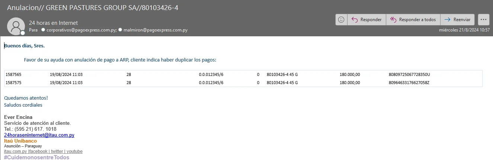
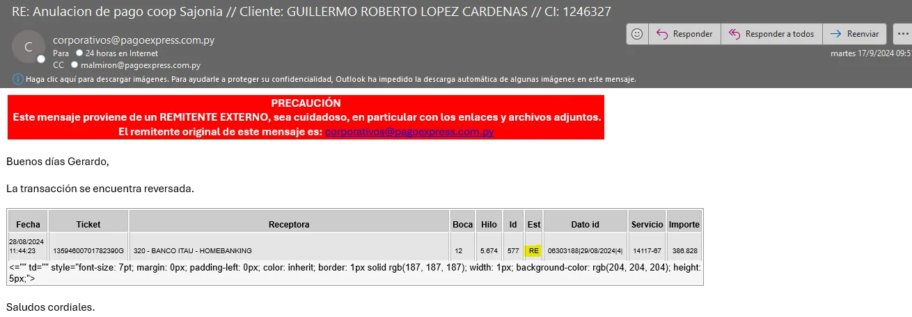
Obs.: En el campo de EST debe indicar RE (reversada) si ya se reversó, caso contrario será CO (confirmada).
Con este correo de aprobación, deben derivar el ID al área de Cámara Compensadora con el formato correspondiente en la fecha que se indica en el correo que será acreditado.
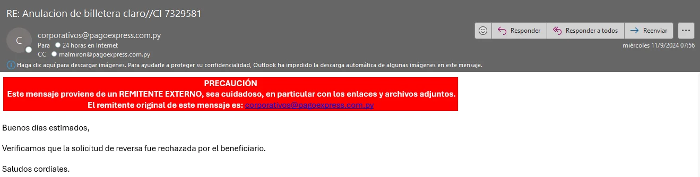
El cliente debe ser informado y el ID se deriva a Cámara Compensadora con el comentario de “Favor finalizar sin éxito. Reversa rechazada, cliente informado” aclarando el motivo descripto por la procesadora.
Confirmaciones
- Correo a corporativos@pagoexpress.com.py.
- Datos necesarios:
- Detalles visualizados en PE Pagos (no adjuntar número de cuenta débito).
- Número de Ticket de la operación ubicado en 24 Hs. Admin.
- Motivo del pedido.
- Solicitar que se realice la confirmación del pago con el facturador, a los efectos de que la procesadora derive el pedido a la entidad beneficiaria.
Si es un caso de billetera/giro, en el asunto debe indicarse sí o sí “Confirmación de Giro o Anulación Billetera”
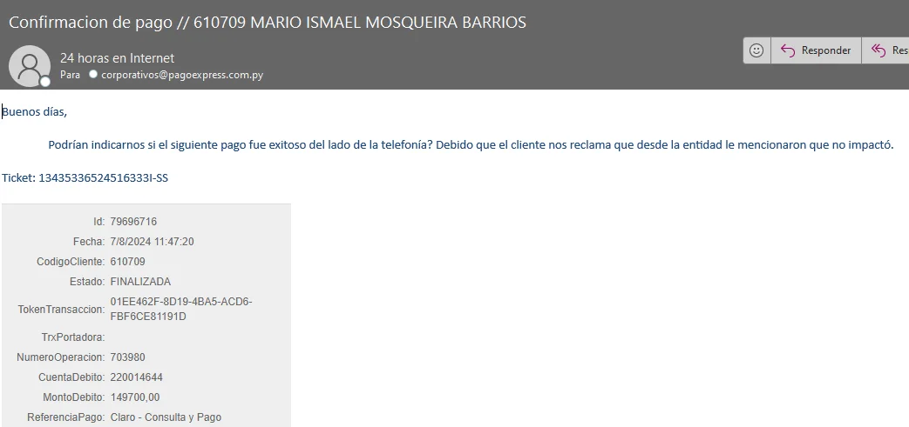
Una vez que la procesadora reciba el caso y derive al facturador, el aviso llega de la siguiente manera:
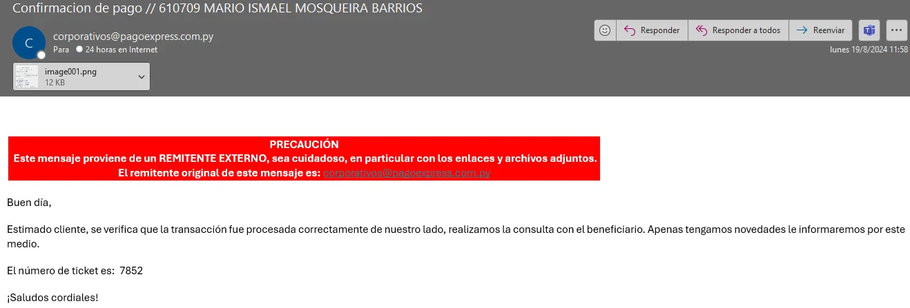
Una vez el facturador confirme el ingreso correcto del pago, se recepciona el siguiente mail:
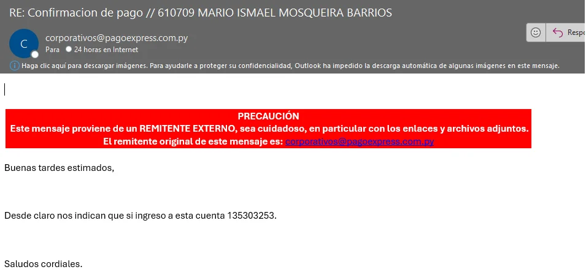
- Si pago no fue exitoso: consultar al área interna de Gestión de Conciliación Operacional de modo a validar si hubo pendencia contable.
- Sin pendencia contable: solicitar OK a procesadora para reversión vía BPM adjuntando el OK .
- Con pendencia contable: GCO deriva extorno a AOC.
BANCARD
Confirmaciones de Pago – Portal de Entidades
Los pedidos de confirmación de estado de pago de servicios que correspondan a APIs en el horario de 08:00 a 17:00hs (día hábiles) deben ingresar por el Portal de Entidades en la opción de Soporte SAC/API ENTIDADES/ CONSULTA. Si son fuera de horario, consultar por mail al CAC.
- Ingresar en Portal Entidades.
- Tickets:
- Para generar los reportes para el control de los tickets ingresados, se debe hacer click en el botón “Mostrar filtros” para realizar la búsqueda según el dato que considere (texto, N° de ticket, usuario creador, por niveles/categorías, fechas, podrá filtrar más de 1 estado) y también podrá Exportar. Si lo prefiere puede “Ocultar filtros”.
- + Nuevo Ticket → elegir tipo y prioridad.
- Se puede reabrir un caso (genera nuevo ticket).
- Soporte SAC: consultas realizadas a Soporte a Entidades.
- Completar los datos necesarios.
- Prioridad Normal: Para consultas sin prioridad
- Prioridad Urgente: Para casos con prioridad 2 de 3
- Prioridad Inmediata: Para casos de amenazas de demanda, escraches, etc.
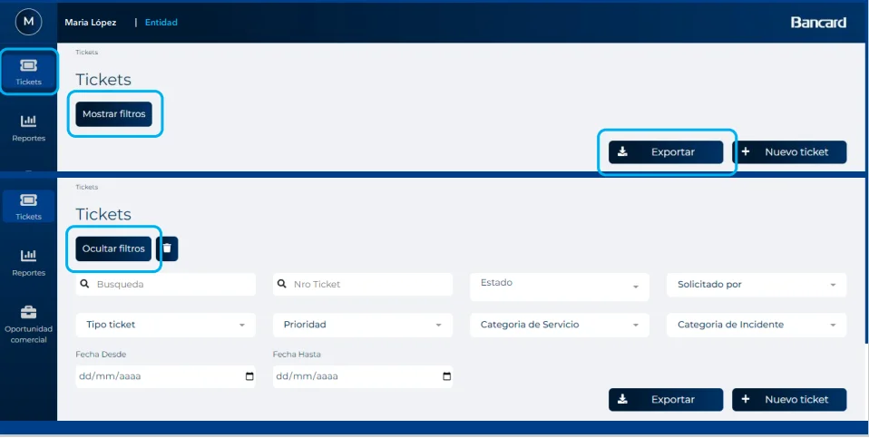
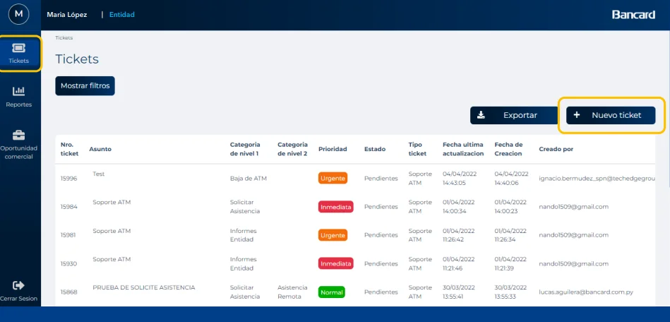
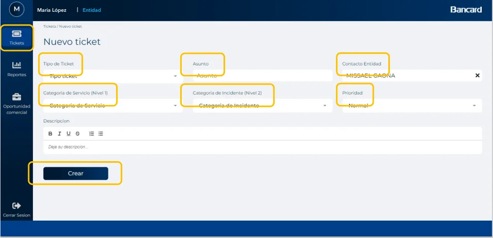
Una vez ingresado el ticket, se puede visualizar el tiempo estimativo de respuesta.
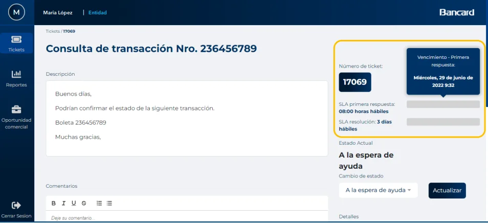
Si el caso es finalizado sin respuesta o se requiere volver a consultar algún dato, una vez resuelto, se puede reabrir el caso (siempre que sea reciente). Esto permitirá reabrir el caso pero genera un nuevo número de ticket y queda registrado ambos tickets.
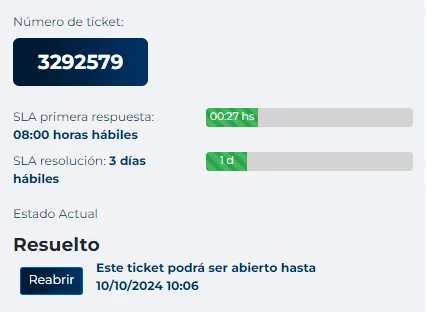
Ingresar usuario y contraseña luego, seleccionar el captcha
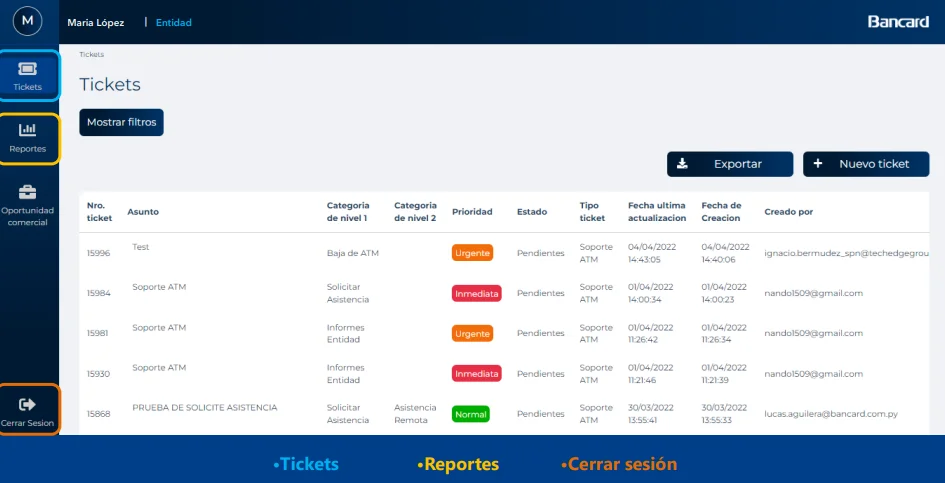
Anulaciones – Portal de Comercios
- Ingresar a Mis Transacciones – Infonet Cobranzas.
- Buscar transacción por número de boleta y fecha.
- Dar click en “Solicitar anulación”.
- Indicar motivo y aceptar condiciones.
- La solicitud se genera automáticamente y queda en la sección “Anulaciones”.
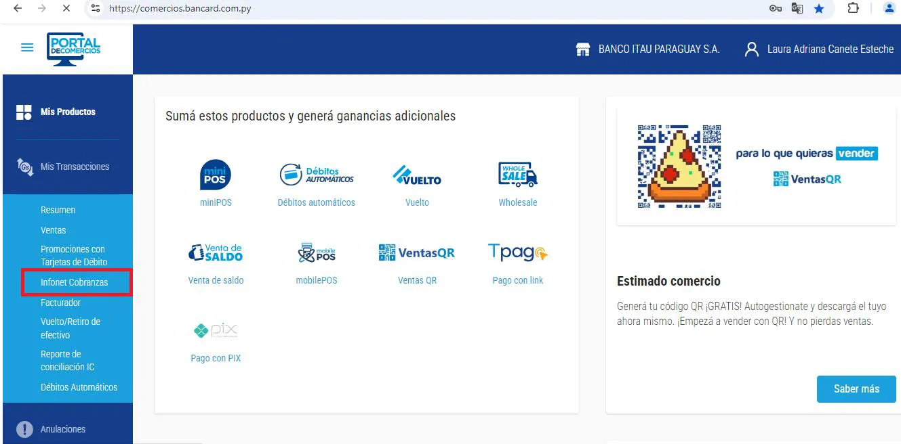
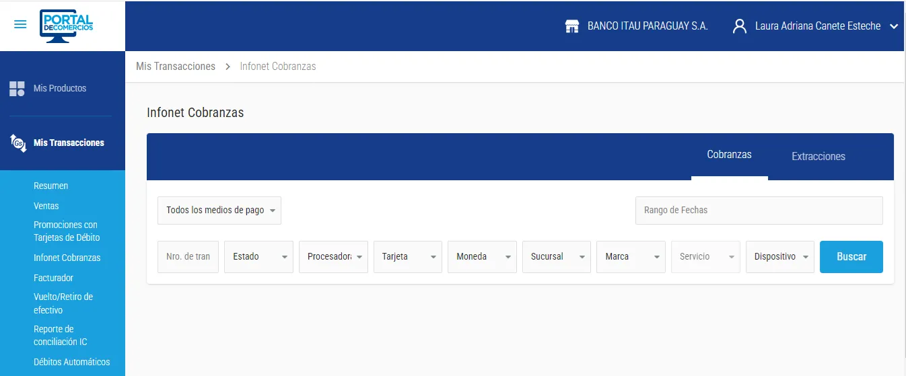
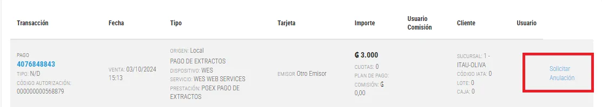
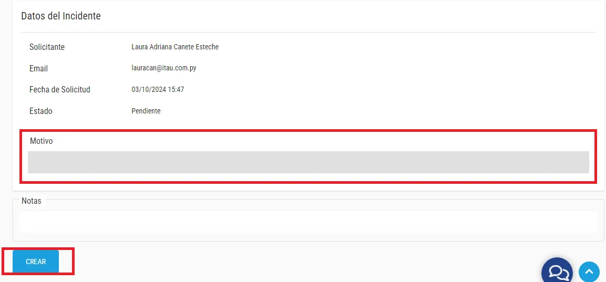
La solicitud se creó con éxito.
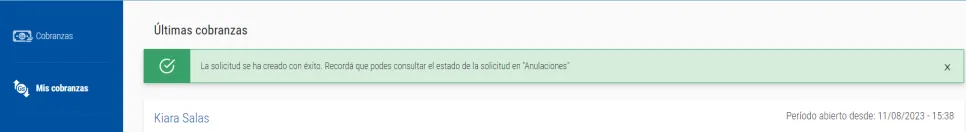
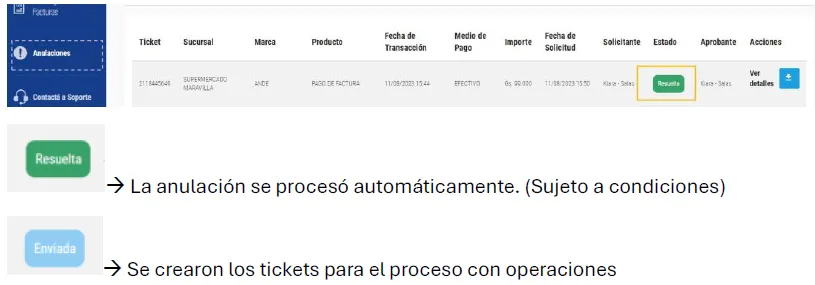